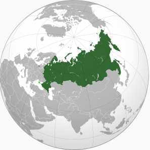
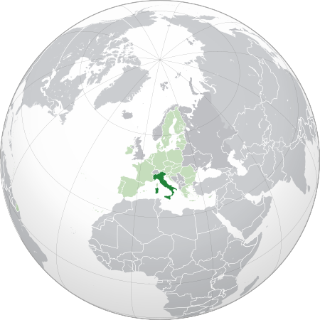
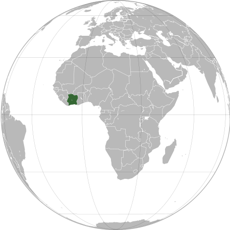

СТРАНЫ МИРA
На данный момент в состав Организации Объединённых Наций входят 193 государства-члена и 2 государства-наблюдателя. Святой Престол (Ватикан) и Государство Палестина являются субъектами международного права и постоянными наблюдателями Генеральной Ассамблеи ООН, не являясь членами ООН.
Италия
Ита́лия (итал. Italia [iˈtaːlja]), официальное название — Италья́нская Респу́блика (итал. Repubblica Italiana [reˈpubːlika itaˈljaːna]) — государство в Южной Европе, в центре Средиземноморья. Входит в Европейский союз и НАТО с момента их создания, является третьей по величине экономикой еврозоны.
Внутри территории Италии находятся два государства-анклава: государство Сан-Марино и расположенное внутри территории Рима ассоциированное с Италией государство Ватикан, с каждым из которых Италия имеет внутреннюю границу протяжённостью соответственно 39 км и 3,2 км.
Кот-Д'Ивуар
Респу́блика Кот-д’Ивуа́р (фр. République de Côte d'Ivoire [ʁepyˈblik də kot diˈvwaʁ]) — государство в Западной Африке. Граничит с Либерией, Гвинеей, Мали, Буркина-Фасо и Ганой, с юга омывается водами Гвинейского залива Атлантического океана. До 1960 года — колония Франции.
В стране насчитывается более 60 этнических групп. Столица — Ямусукро (с населением 231 тыс. жителей), главный экономический и культурный центр страны — Абиджан (около 5,2 млн чел.). Официальный язык — французский, основные местные языки — дьюла, бауле, бете. Национальный праздник — День провозглашения независимости (7 августа 1960 года).
Россия
Росси́я, или Росси́йская Федера́ция[e] (РФ[f]) — государство в Восточной Европе и Северной Азии. Территория России в её конституционных границах составляет 17 125 191 км²; население страны (в пределах её заявленной территории) составляет 145 557 576 чел. (2022). Занимает первое место в мире по территории, шестое — по объёму ВВП по ППС и девятое — по численности населения.
Столица — Москва. Государственный язык на всей территории страны — русский, в ряде регионов России также установлены свои официальные языки. Денежная единица — российский рубль, основные показатели».
О РОССИИ
Росси́я, или Росси́йская Федера́ция (РФ) — государство в Восточной Европе и Северной Азии. Территория России в её конституционных границах составляет 17 125 191 км²; население страны (в пределах её заявленной территории) составляет 145 557 576 чел. (2022). Занимает первое место в мире по территории , шестое — по объёму экономики и девятое — по численности населения . Столица — Москва. Государственный язык на всей территории страны — русскийПерейти к разделу , в ряде регионов России также установлены свои официальные языки. Денежная единица — российский рубль. Россия — федеративная президентско-парламентская республика. С 31 декабря 1999 года (с перерывом в 2008—2012 годах) должность президента Российской Федерации занимает Владимир Путин. C 16 января 2020 года в должности председателя Правительства Российской Федерации находится Михаил Мишустин. Россия граничит с 18 государствами мира (с шестнадцатью — по суше и с двумя — по морю) . Россия является самой холодной страной в мире: в России самая низкая среднегодовая температура воздуха среди всех стран мира, составляющая −5,5 °С; Россия — ядерная держава; одна из ведущих космических держав мира. Россия является постоянным членом Совета Безопасности ООН с правом вето; одна из современных великих держав мира. Также Россия состоит в целом ряде международных организаций: ООН, СНГ, ОДКБ, БРИКС, и других . После распада СССР в конце 1991 года Российская Федерация была признана международным сообществом как государство-правопреемник СССР в вопросах ядерного потенциала, внешнего долга, государственной собственности за рубежом, а также членства в Совете Безопасности ООН. Российское законодательство рассматривает Россию как государство-продолжатель СССР. Россия 6-я по объёму экономики в мире (после Китая, США, Индии, Японии и Германии).
О ИТАЛИИ
Ита́лия (итал. Italia [iˈtaːlja]), официальное название — Италья́нская Респу́блика (итал. Repubblica Italiana [reˈpubːlika itaˈljaːna]) — государство в Южной Европе, в центре Средиземноморья. Входит в Европейский союз и НАТО с момента их создания, является третьей по величине экономикой еврозоны. Граничит с Францией на северо-западе (протяжённость границы — 488 км), Швейцарией (740 км) и Австрией (430 км) — на севере, Словенией — на северо-востоке (232 км). Внутри территории Италии находятся два государства-анклава: государство Сан-Марино и расположенное внутри территории Рима ассоциированное с Италией государство Ватикан, с каждым из которых Италия имеет внутреннюю границу протяжённостью соответственно 39 км и 3,2 км. Занимает Апеннинский полуостров, крайний северо-запад Балканского полуострова, Паданскую равнину, южные склоны Альп, острова Сицилия, Сардиния и ряд мелких островов. На территории Италии находится 55 памятников всемирного наследия ЮНЕСКО — Италия разделяет с Китаем первое место по их количеству.
О Кот-Д’ИВУАРЕ
Респу́блика Кот-д’Ивуа́р (фр. République de Côte d'Ivoire [ʁepyˈblik də kot diˈvwaʁ]) — государство в Западной Африке. Граничит с Либерией, Гвинеей, Мали, Буркина-Фасо и Ганой, с юга омывается водами Гвинейского залива Атлантического океана. До 1960 года — колония Франции. В стране насчитывается более 60 этнических групп. Столица — Ямусукро (с населением 231 тыс. жителей), главный экономический и культурный центр страны — Абиджан (около 5,2 млн чел.). Официальный язык — французский, основные местные языки — дьюла, бауле, бете. Национальный праздник — День провозглашения независимости (7 августа 1960 года). До 1986 года название государства официально переводилось на русский язык как Республика Бе́рег Слоно́вой Ко́сти. В октябре 1985 года съезд правящей Демократической партии постановил, что слово «Кот-д’Ивуар» является географическим названием и его не нужно переводить с французского. Тем не менее, за пределами стран бывшего СССР название государства по-прежнему переводится (англ. Ivory Coast, нем. Elfenbeinküste, исп. Costa del Marfil, польск. Wybrzeże Kości Słoniowej и т.п.)
Список стран по численности вооружённых сил и военизированных формирований
Приблизительные цифры Источник информации: Центр стратегических и международных исследований (2014) Источник информации о населении:
КНДР
РК